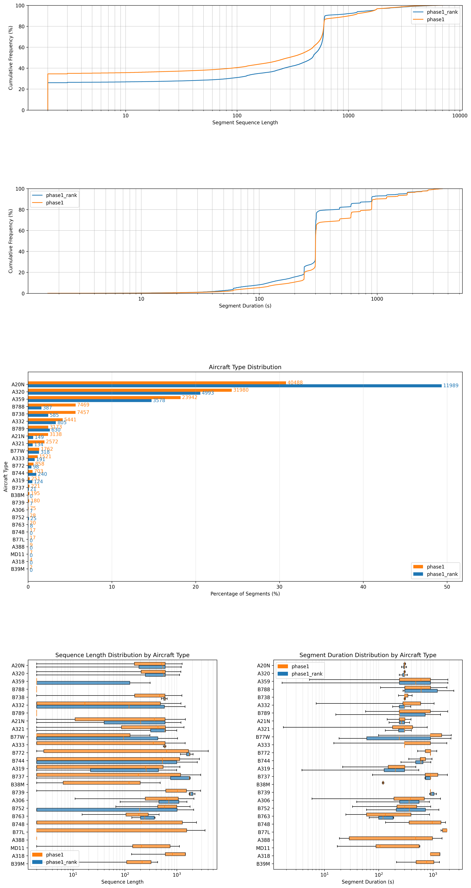

Data¤
Summary statistics:
| Dataset Partition | Trajectory Rows | Fuel Segments | Flights | File Size |
|---|---|---|---|---|
| Phase 1 (Train) | 124,094,050 | 133,984 | 11,088 | 3.2 GB |
| Phase 1 (Rank) | 24,499,924 | 24,972 | 1,929 | 616 MB |
| Phase 2 (Rank) | 37,877,494 | 61,745 | 2,839 | 943 MB |
First party data¤
Identifier Uniqueness
The segment identifier idx in the fuel files is not globally unique. It resets between competition phases/months.
For example, idx=0 exists in both Phase 1 (September) and Phase 2 (October). When performing joins or evaluations spanning multiple partitions, you should use the composite key (idx, flight_id) to avoid data misalignment.
Phase 2 Data
In Phase 2, fuel data fuel_phase2_rank.parquet contains both September and October data.
But flight list data flight_list_phase2_rank and trajectory data flights_phase2_rank/prc*.parquet contains only October data.
Take caution when joining data.
Schema:
The distribution of aircraft type, segment lengths are heavily tailed.

A visualisation of the fuel burn in a simple altitude/speed plot.

A visualisation of the preprocessed trajectory features. Notice that state vectors are irregularly sampled, often with significant time gaps.

Weather Data¤
Note
Weather data is unused in v0.1 versions of the models.
Future versions of the model (v0.2 onwards) will allow optionally specifying the wind component for more accurate predictions.
We augment the trajectory data with u and v wind components extracted from the ARCO ERA5 dataset. This requires installing microfuel with the era5 optional depedency.
-
The weather data is massive (~565 GB). It is recommended to use an extenral HDD and symlink it to
data/raw/weather:mkdir -p /mnt/hdd/microfuel_era5 ln -s /mnt/hdd/microfuel_era5 data/raw/era5 -
Install the
gcloudCLI and run the following to pull specific pressure level slices in NetCDF format.uv run scripts/main.py download-era5- Months:
2025-04..=2025-10 - Variables:
u_component_of_wind,v_component_of_wind - Levels: 28 levels (1000..=70 hPa)
- Months:
-
We interpolate the 4D weather grid (
time,level,lat,lon) onto the 4D flight trajectory coordinates.uv run scripts/main.py create-era5 --partition phase1